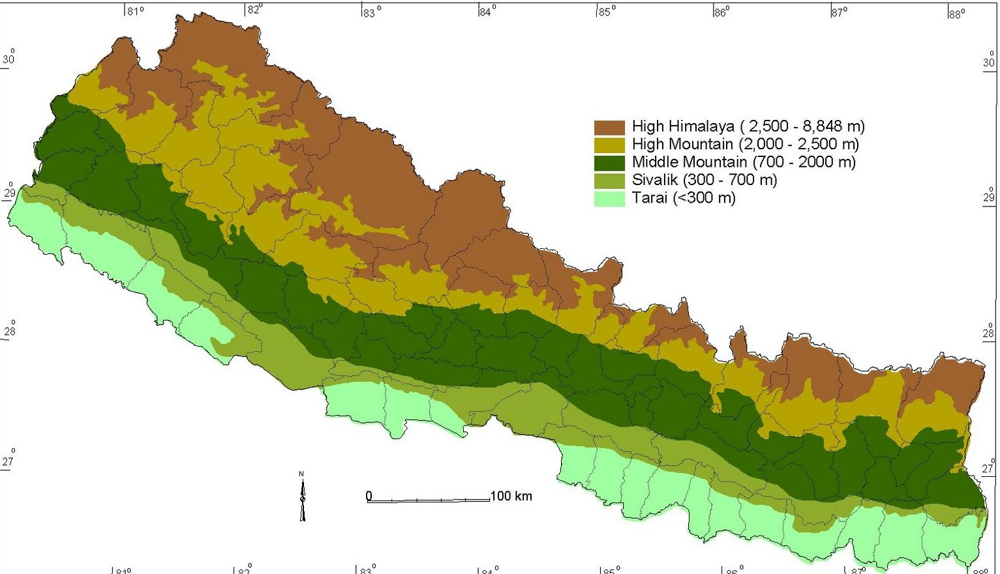

Quick Facts
Nepal ,officially Federal Democratic Republic of Nepal,is a landlocked country in South Asia. It is located mainly in the Himalayas, but also includes parts of the Indo-Gangetic Plain. With an area of 1,47,181 sq.km,is 93rd largest country by area. It borders China in the north and India in the south, east and west while Bangladesh is located within only 27 km of its southeastern tip and Bhutan is separated from it by the Indian state of Sikkim. Nepal has a diverse geography, including fertile plains, subalpine forested hills, and eight of the world's ten tallest mountains, including Mount Everest, the highest point on Earth. Kathmandu is the capital and the largest city. Nepal is a multiethnic country with Nepali as the official language.
Geographical Presence
Nepal is of roughly trapezoidal shape, 800 km long and 200 km wide, with an area of 147,181 km2 (56,827 sq mi).Nepal lies between latitudes 26° and 31°N, and longitudes 80° and 89°E. Nepal is commonly divided into three physiographic areas: Mountain, Hill and Terai.Nepal's defining geological processes began 75 million years ago when the Indian plate, then part of the southern supercontinent Gondwana, began a north-eastward drift caused by seafloor spreading to its south-west, and later, south and south-east. Simultaneously, the vast Tethyn oceanic crust, to its northeast, began to subduct under the Eurasian plate.These dual processes, driven by convection in the Earth's mantle, both created the Indian Ocean and caused the Indian continental crust eventually to under-thrust Eurasia and to uplift the Himalayas. Immediately south of the emerging Himalayas, plate movement created a vast trough that rapidly filled with river-borne sediment and now constitutes the Indo-Gangetic Plain. Nepal lies almost completely within this collision zone, occupying the central sector of the Himalayan arc, nearly one third of the 2,400 km (1,500 mi)-long Himalayas,with a small strip of southernmost Nepal stretching into the Indo-Gangetic plain and two districts in the northwest stretching up to the Tibetan plateau.

Languages
Nepal's diverse linguistic heritage stems from three major language groups: Indo-Aryan, Tibeto-Burman, and various indigenous language isolates. The major languages of Nepal (percent spoken as native language) according to the 2011 census are Nepali (44.6%), Maithili (11.7%), Bhojpuri (6.0%), Tharu (5.8%), Tamang (5.1%), Nepal Bhasa (3.2%), Bajjika (3%) and Magar (3.0%), Doteli (3.0%), Urdu (2.6%), Awadhi (1.89%), and Sunwar. Nepal is home to at least four indigenous sign languages.
Derived from Sanskrit, Nepali is written in Devanagari script. Nepali is the official language and serves as lingua franca among Nepali of different ethnolinguistic groups. The regional languages Maithili, Awadhi, Bhojpuri and rarely Urdu of Nepali Muslims are spoken in the southern Madhesh region. Many Nepali in government and business speak Maithili as the main language and Nepali as their de facto lingua franca. Varieties of Tibetan are spoken in and north of the higher Himalaya where standard literary Tibetan is widely understood by those with religious education. Local dialects in the Terai and hills are mostly unwritten with efforts underway to develop systems for writing many in Devanagari or the Roman alphabet.
Religion
The 2011 census reported that the religion with the largest number of followers in Nepal was Hinduism (81.3% of the population), followed by Buddhism (9%); the remaining were Islam (4.4%), Kirant (3%), Christianity (1.3%) and other folk religions (0.4%). The prevalence of irrelegion was reported to be at 0.5%.By percentage of population, Nepal has the largest population of Hindus in the world. Nepal was officially a Hindu Kingdom until recently, and Shiva was considered the guardian deity of the country. Differences between Hindus and Buddhists have been minimal in Nepal due to the cultural and historical intermingling of Hindu and Buddhist beliefs. Important pilgrimages in Nepal include, Pashupatinath Temple, Lumbini (the birth place of Gautam Buddha) and Janakpurdham (the site of the ancient capital of Videha, home to goddess Sita), among others.
Education
The overall literacy rate (for population age 5 years and above) increased from 54.1% in 2001 to 65.9% in 2011. The male literacy rate was 75.1% compared to the female literacy rate of 57.4%. The highest literacy rate was reported in Kathmandu district (86.3%) and lowest in Rautahat (41.7%). While the net primary enrolment rate was 74% in 2005;[191] in 2009, that enrolment rate was 90%.
However, increasing access to secondary education (grade 9–12) remains a major challenge, as evidenced by the low net enrolment rate of 24% at this level. More than half of primary students do not enter secondary schools, and only one-half of them complete secondary schooling. In addition, fewer girls than boys join secondary schools and, among those who do, fewer complete the 10th grade.
Nepal has seven universities: Tribhuvan University, Kathmandu University, Pokhara University, Purbanchal University, Mahendra Sanskrit University, Far-western University, and Agriculture and Forestry University. Some newly proposed universities are Lumbini Bouddha University, and Mid-Western University. Some fine scholarship has emerged in the post-1990 era.